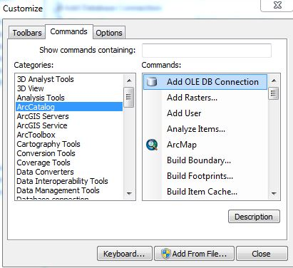

You can use tables from a Microsoft Access database in ArcMap through an OLE DB connection. OLE DB is a standard for sharing data between applications, enabling you to view the Access database in ArcMap. To maintain data integrity, modify an Access database in Access only. Information from ArcGIS Help.
Create a OLE DB Connection (.accdb, suffix for current versions of Access)
- In ArcCatalog, click the Add OLE DB Connection button (If this button is not in the toolbar, see "Add OLE DB Connection Button" below on how to add it), click it and the Data Link Properties dialog box will appears in which you can create an OLE DB connection
- Click the Provider tab
- Click Microsoft Office 12.0 Access Database Engine OLE DB Provider and click Next
- On the Connection tab, specify the database or browse to it in section one. If the database has a password, enter that information in section two.
- Click Test Connection to verify that you can connect to the database.and click OK if the connection test was successful
- Type a new name for the connection and press ENTER (remember to refresh database connection folder)
- To use the Access table, browse to the table through the OLE DB connection and add it to ArcMap. Access tables, like other tables without associated features, are only shown on when the ArcMap Table of Contents window is listed by source
- This process needs to happen on every computer that is accessing a database.
Create a OLE DB Connection (.mdb, suffix for older versions of Access)
- After adding the Add OLE DB Connection button (Instructions Below), click it and the Data Link Properties dialog box will appears in which you can create an OLE DB connection
- Click the Provider tab
- Click Microsoft Jet 4.0 OLE DB Provider and click Next
- On the Connection tab, specify the database or browse to it in section one. If the database has a password, enter that information in section two.
- Click Test Connection to verify that you can connect to the database.and click OK if the connection test was successful
- Type a new name for the connection and press ENTER (remember to refresh database connection folder)
- To use the Access table, browse to the table through the OLE DB connection and add it to ArcMap. Access tables, like other tables without associated features, are only shown on when the ArcMap Table of Contents window is listed by source
Common Databases Connection Locations
- bikeways : \\oakland\pwa\Transportation\Bike-Ped_Program\BMP\2007_Plan-IMPLEMENTATION\Bikeways\Bikeway network-IMPLEMENTATION.accdb
- signage : \\oakland\pwa\Transportation\Bike-Ped_Program\Projects\Bikeways-signage\WayfindingSigns.accdb
- bike parking : \\oakland\pwa\Transportation\Bike-Ped_Program\Projects\Bike_Parking\database\BikeParking.accdb
Add OLE DB Connection Button

Add the OLE DB Connection command as a button to a toolbar in ArcCatalog.
- Open Arc Catalog.
- Click Customize on the main menu and click Customize mode. The Customize dialog box opens
- Click the Commands tab
- Choose ArcCatalog from the Categories list
- Drag Add OLE DB Connection from the Commands list onto a toolbar in ArcCatalog (in the middle of other icons)
- Close the Customize dialog box.